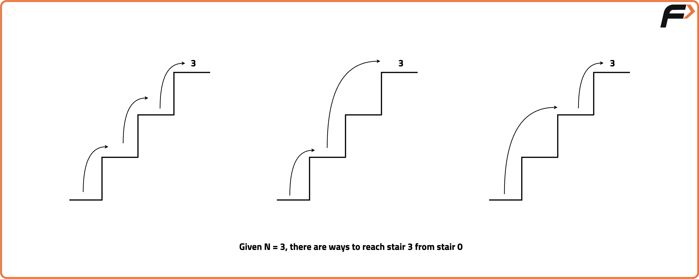

Dynamic Programming : Climbing Stairs
Problem Statement: Given a number of stairs. Starting from the 0th stair we need to climb to the “Nth” stair. At a time we can climb either one or two steps. We need to return the total number of distinct ways to reach from 0th to Nth stair.

Pre-req: Recursion, Dynamic Programming Introduction
Examples
Input: n = 2
Output: 2
Explanation: There are 2 unique ways to climb to the 2nd step:
1. 1 step + 1 step
2. 2 steps
Input: n = 3
Output: 3
Explanation: There are 3 unique ways to climb to the 3rd step:
1. 1 step + 1 step + 1 step
2. 2 steps + 1 step
3. 1 step + 2 steps
Disclaimer: Here is the practice link to help you assess your knowledge better. It's highly recommend trying to solve it before looking at the solution.
Approach
Algorithm
The Fibonacci sequence is defined as F(n) = F(n-1) + F(n-2) with base cases F(0)=1 and F(1)=1. A naive recursive solution recalculates many subproblems, leading to exponential time. By storing results in a DP array, we avoid recomputation and compute the result efficiently.
Approach:
- Initialize a DP array
dpof sizen+1with -1 to store results. - Set the base cases:
dp[0] = 1,dp[1] = 1. - Iterate from
i = 2tonand computedp[i] = dp[i-1] + dp[i-2]. - Return
dp[n]as the answer.
Code
#include <bits/stdc++.h>
using namespace std;
int main() {
// Number for which Fibonacci is to be calculated
int n = 3;
// Create a dp array initialized with -1
vector<int> dp(n + 1, -1);
// Base cases
dp[0] = 1;
dp[1] = 1;
// Fill dp array using bottom-up dynamic programming
for (int i = 2; i <= n; i++) {
dp[i] = dp[i - 1] + dp[i - 2];
}
// Print the nth Fibonacci number
cout << dp[n];
return 0;
}
Complexity Analysis
Time Complexity: O(n), since we compute each Fibonacci number from 2 to n exactly once.
Space Complexity: O(n), for storing the DP array of size n+1.